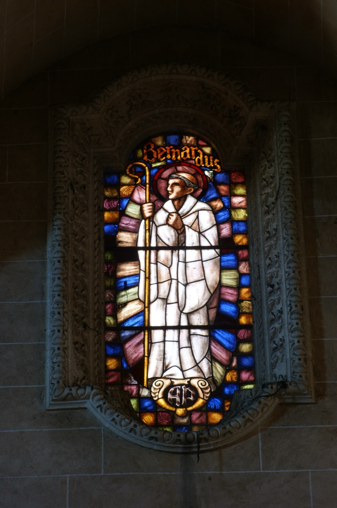

San Bernardo de Claraval (1090–1153) fue un monje y abad cisterciense, fundador de la abadía cisterciense de Claraval y Doctor de la Iglesia. Es una de las figuras más importantes de la cristiandad del siglo XII, destacando como predicador, escritor, fundador de monasterios (68 en total, repartidos por toda Europa) y gran difusor del culto a la Virgen María. Promovió una vida religiosa austera y contemplativa.
En esta vidriera aparece con tonsura, vestido con el hábito blanco cisterciense y portando un báculo de abad. Las iniciales de la parte inferior de la vidriera son las del donante que financió su realización.